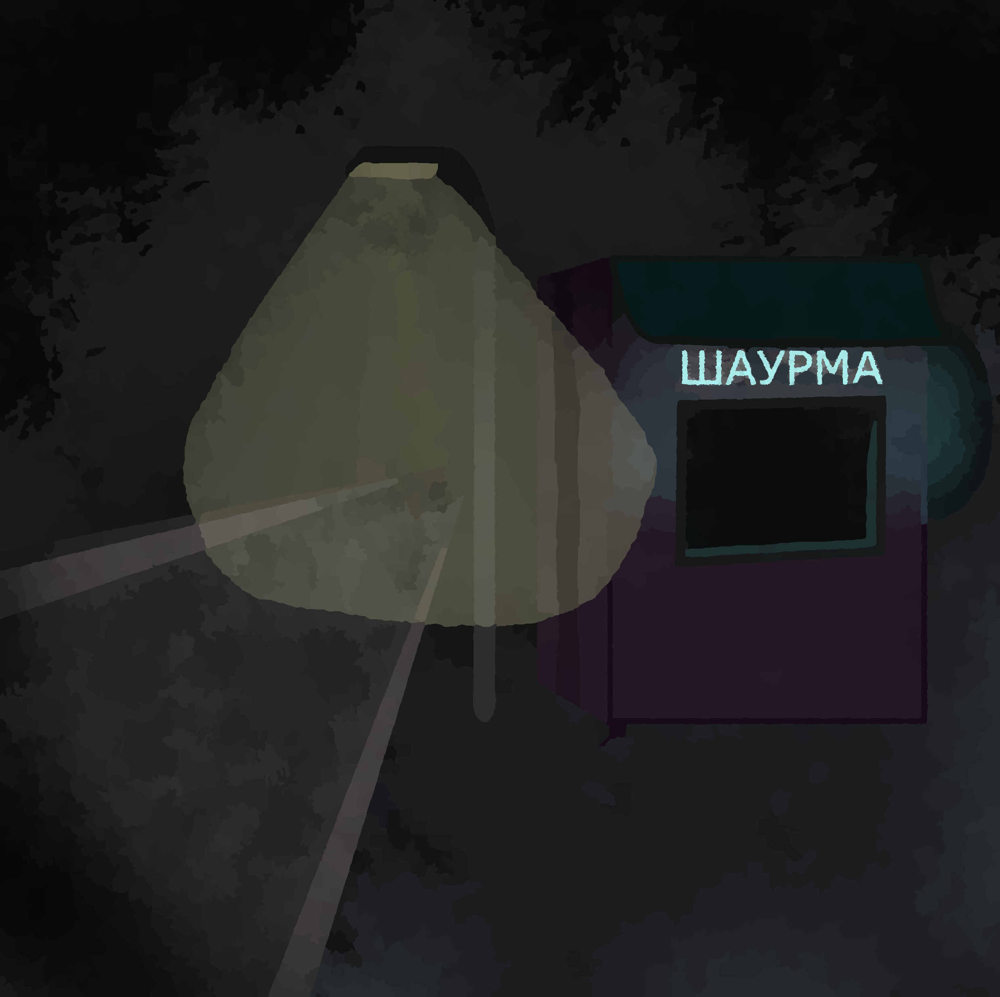
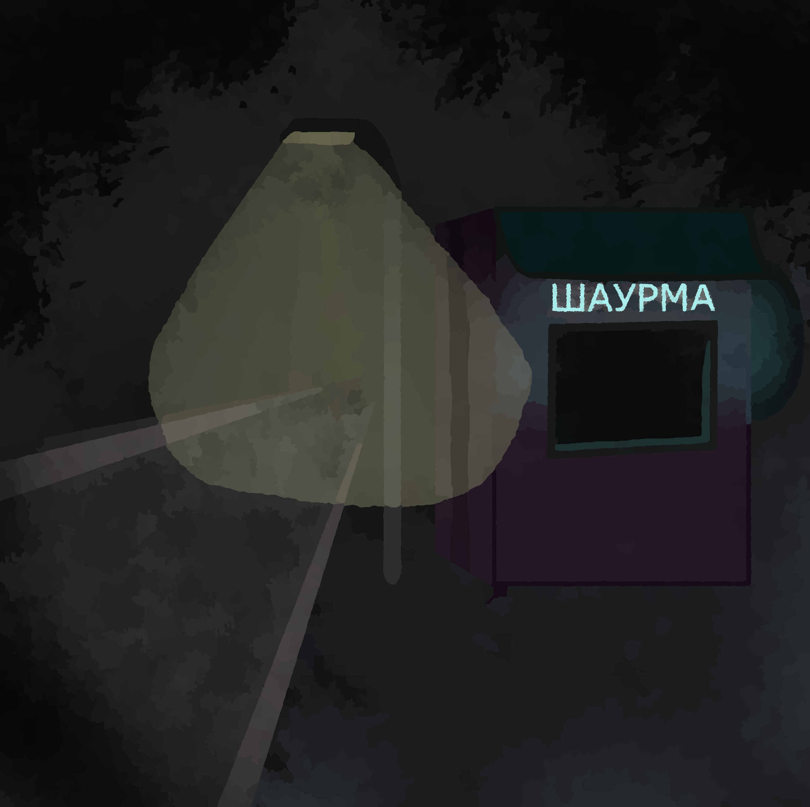

В городе жёсткий недостаток солнечного света
 

В городе Санкт-петербург необычное явление: уровень солнечного света упал до исторического минимума, фонари светят даже в полденнь, электроэнергия подорожала в связи с необходимостью освещать дома круглыми сутками.
Что же делать?
Мы рекомендуем вам не забывать платить за свет и на случай закупиться килограммом восковых свечек и тысячью спичками, чтобы свечки зажигать. Берегите себя в такое трудное время!

Автор № 3232300
Дата публикации 1 сентября 2033 года
Раздел: Город